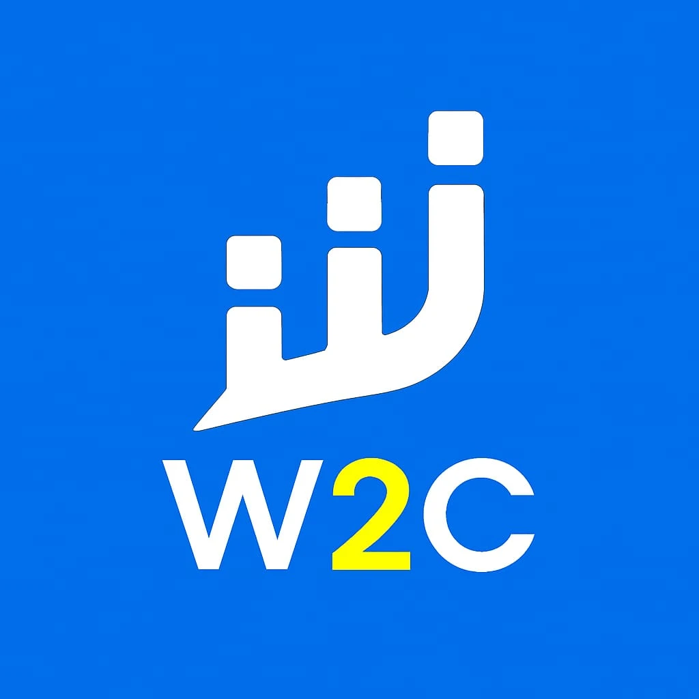

This page explains each role in plain words, so you can see what the work involved even if you do not work in technology. Open a role to read five short points: what the job is, what the work involved, the tools and methods, the skills it built and how it helps a client. For the finished results, see the technical writing samples, the web development service and the project portfolio.
Freelance · Remote
Technical Content Writer
Freelance
View five key points
- In plain words: A technical content writer turns complicated subjects such as software, data, engineering and research into clear articles, guides and reports that people outside the field can follow.
- What the work involved: Research-led technical, academic and business writing, from the first round of research to a finished, well-structured document written for a particular audience and brief.
- Tools and methods: Researching reliable sources, outlining, drafting, editing and fact-checking, using tools such as Google Docs, Microsoft Word, Grammarly, Markdown, Zotero and WordPress.
- Skills it built: Translating complex technical concepts into structured, understandable content, writing analytical reports and business documentation informed by stakeholder requirements, and SEO-aware writing so pages can be found in search.
- How it helps a client: You receive documentation, articles or research reports that are accurate, easy to read and ready to publish, whether you are a business, a researcher or a student.
Internship · Remote
Web Developer
UR Technology and Computers
View five key points
- In plain words: A web developer builds the visible pages of a website and the behind-the-scenes logic that makes it work. This was a remote internship in August–September 2024.
- What the work involved: Developing a Virtual Learning Environment, an online platform where learners can sign in and use course material, with PHP, SQL and HTML/CSS.
- Tools and methods: PHP and SQL for the server-side functionality and the database, and HTML and CSS for the pages visitors see.
- Skills it built: Responsive interfaces that adapt to phones and computers, input sanitisation (cleaning what users type in so it cannot cause harm) and role-based access controls (giving different users different permissions).
- How it helps a client: It joins writing with hands-on development, so technical systems such as websites, web applications and CRM tools can be explained accurately and planned with security in mind.
Full-time · India · Remote
Book Author
Uolo.com
View five key points
- In plain words: A book author researches, plans and writes the content of a book so that readers can learn a subject step by step.
- What the work involved: A full-time, remote authoring role with Uolo.com in India, running from August 2023 to July 2024.
- Tools and methods: Book authoring typically relies on a clear outline, careful research, drafting and rounds of revision, with a consistent structure and tone across chapters.
- Skills it built: Organising a large subject into a logical order, keeping language consistent across long documents and working to deadlines on a long-form project.
- How it helps a client: Long-form experience suits manuals, guides, white papers and other book-length documentation that must stay consistent from start to finish.
Full-time · On-site
Subject Matter Expert
Academia Xperts · Kolkata, West Bengal, India
View five key points
- In plain words: A subject matter expert is the person who knows a topic in depth and makes sure the content or answers about it are accurate.
- What the work involved: A full-time, on-site role in Kolkata, West Bengal, from June to August 2023, working with Academia Xperts.
- Tools and methods: Expert work generally means checking facts, explaining concepts correctly and supporting academic or technical material with sound subject knowledge.
- Skills it built: Accuracy and attention to detail, and applying a computer science and data science background to real academic and technical questions.
- How it helps a client: Technical content that has been checked by someone with a computer science foundation is more reliable and easier to trust.
Freelance · Remote

Technical Content Writer
Way2Class
View five key points
- In plain words: Way2Class is the earliest role listed here: the start of a technical writing career as a freelancer, working remotely.
- What the work involved: Research and technical content writing, with an emphasis on communicating technical concepts clearly.
- Tools and methods: Researching a topic, breaking it into simple steps, and drafting and editing clear explanations for readers.
- Skills it built: Clear structure, plain-language explanation of technical ideas and meeting freelance deadlines.
- How it helps a client: It is the foundation of the current freelance practice: the same research-first approach now used for client articles, documentation and reports.
See the experience in practice
Common questions
What kind of writing does Soumi Ganguly do?
Technical articles, documentation, research reports, academic writing support and SEO content, shaped around your subject, audience and brief. See the technical writing service.
Does she only write, or does she also build things?
Both. Alongside writing there is hands-on web development experience, and the services page covers websites, customised CRM, data analytics and AI work.
Does she work with clients outside India?
Yes. She works remotely with clients in India and abroad. Details are on the international services page.
How can I start a project?
Use the contact page or email contact@soumiganguly.com with a short brief. The scope, deliverables and timeline are agreed before work starts.